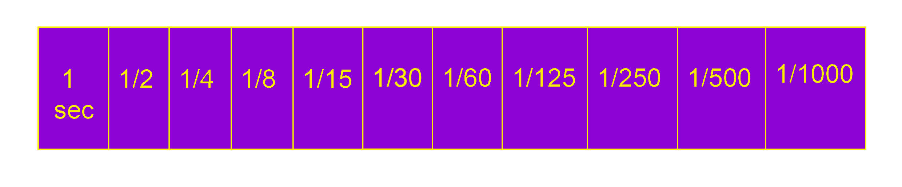

Getting to know your camera can give you an advantage when you need to photograph your work processes and final projects. Here is a basic overview of a basic film cameras functions
and the settings you can use when operating the camera manually...your welcome!
1. Basic film camera
The camera body is essentially a lightproof box locating all components. The film is in total darkness until the shutter opens.
2. Lens
Focuses light, in the form an image of the subject, onto the film. When the subject is in focus the image will appear to be sharply defined. When the the subject is out of focus, the image will be fuzzy. Focus must be adjusted for each subject which is at a different distance from the camera.
The lens may also have a ZOOM function allowing you to change the angle of view of the lens.
Wide angle allows you to include more of the scene and“get more in”. Telephoto allows you to bring more distant objects closer.
The lens may also have a ZOOM function allowing you to change the angle of view of the lens.
Wide angle allows you to include more of the scene and“get more in”. Telephoto allows you to bring more distant objects closer.
3. Aperture
A variable sized “hole” which controls the intensity of light
reaching the film. The size of the aperture is called the
F/STOP and exposure is proportional to aperture.
Typically, the aperture scale on a manual control camera is as follows:

Typically, the aperture scale on a manual control camera is as follows:
4. Shutter
A lightproof ‘trapdoor’ which opens when you press the button to allow light in the form of the image to reach the film.
The length of time the shutter is open is called the shutter speed and is expressed in fractions of a second. Exposure is proportional to shutter speed! Typically, the shutter speeds on a manual control camera are as follows:

5. Film
Film is the light sensitive recording medium in the camera.
The sensitivity of film is called the film speed and is expressed as an ISO number. A high number (FASTER) indicates MORE sensitive film; a low number (SLOWER) indicates LESS sensitive film. ISO = International Organization Standardization
The sensitivity of film is called the film speed and is expressed as an ISO number. A high number (FASTER) indicates MORE sensitive film; a low number (SLOWER) indicates LESS sensitive film. ISO = International Organization Standardization